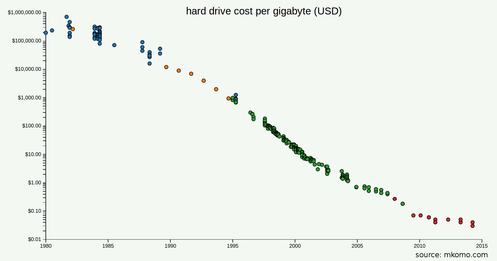
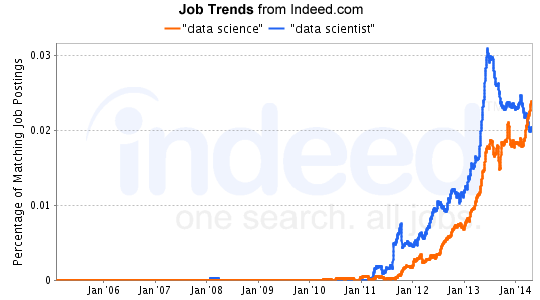
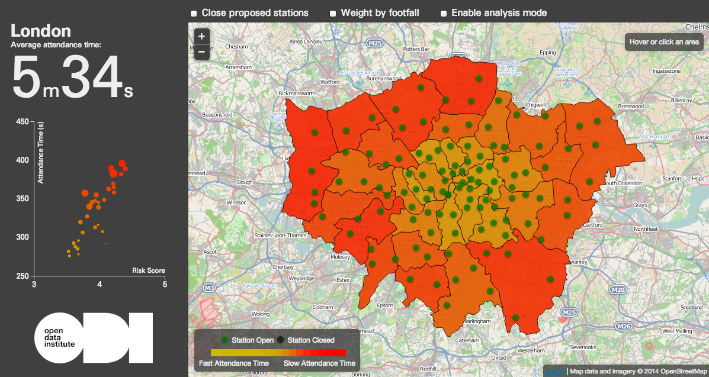

We are experiencing a data revolution.
Projections alone for the volume of data speak of 40 zettabyte, or over 5 terabyte per person, by 2020. Data is everywhere: vendor-driven buzzwords like 'big data' dominate the private sector, the general public is more aware of metadata in the wake of the Edward Snowden revelations, and we see a positive uptake of data in our daily lives in the form of, for example, transportation apps based on open data and tools for the quantification of fitness activities. Like the internet, data is here to stay.
The UK plays a leading role in the discussion of how data is culture
In my role at the Open Data Institute I observe the extremes of data as culture. There are individuals, countries and governments who are almost oblivious of data. They are at the very beginning of integrating data into their society and it will be a long journey of scepticism, sobering experiences and balancing the tension between, for example, use and privacy. The advantages of better informed decisions make resisting these changes difficult, similar to a resistance of adopting the internet.
At the other end of the spectrum are societies such as the Nordic countries, the US and the UK. They routinely rank at the top in the Open Data Barometer and similar studies. However, also developing economies, and a great example is Moldova, are already part of the data revolution. The economic, social and environmental benefits of data are widely recognised. A classic example is transportation - Deloitte estimates that data published by Transport for London has saved public transport users £15-58m in time per year. Changed behaviours, eg the trend to using more public transport, reliance on real-time information on traffic disruption, and 'smarter cities' or smarter citizens, show the effect of using data.
But data is not just fodder for mobile applications: it is part of our culture. The ODI's 'Data as Culture' and 'Data as Culture 2' programme highlights the opportunities and challenges of pervasive data through a series of artworks designed to make us think about the impact of data on our lives and on society. Last month, ODI artist-in-residence Julie Freeman launched 'We Need Us' at the TED global conference in Rio de Janeiro, Brazil. The artwork focuses on the intersection between scientific discovery, open data and our human responses to the two. In doing so, it reflects the ways in which we humans produce, use and react to the growing amount of data that is available to us.
I will discuss three trends for the future of data in more detail. They are not exhaustive but emphasise current developments, firstly:
1. Data as a commodity
 Source: Matthew Komorowski
Data has become a commodity. This means that there is little differentiation across supply for data services such as collection, storage or analytics. Cloud storage vendors offer a similar product and pricing. The fact that analytics solutions can be bought 'as a service', over the internet and across borders, greatly accelerates this trend. As a consequence, price is a function of the market as a whole. This trend is again most obvious in storage cost. The same development in the car industry would make a Porsche cheaper than a pound!
For a long time the mantra of data storage was 'more space cheaper'. However, we have shifted away from this trend because of the move to the cloud and the accompanying decrease in downloads. Mobile devices have also brought a new dimension to the commoditisation of data. For example, smartphones make pervasive data collection possible like never before.
In the future, differentiation will happen less on monopolising data, be that software, hardware or access to information, but on the services that make sense of the wealth of data. New markets such as digital peer-to-peer lending platforms have a different, closer relationship with data, where competition moves away from data access to whoever can build the most effective algorithms.
Finally, we need more than data as a commodity to make better decisions, to improve a company’s market position or to conduct smarter research. Volume is only one aspect of ‘big data’ and asking the right questions at the right time puts statisticians, analysts and domain experts in a crucial role.
2. The rise of the data scientist and data citizen
For a long time data was the domain of statisticians and related scientists. This is changing – more and better tools democratise access to information, for example, by removing the need to code or treating statistical models as black boxes. Specialised fields, such as machine learning, approach traditional data problems from a new angle. We may realise that no single person can cover all aspects of a data scientist, a combination of statistics, domain expertise and software skills. According to indeed.com, a job site, data science, in contrast, persists as a trend.

However, technical expertise is only one aspect of the increased data literacy. More people are asking questions of what exactly is happening with their medical records. The open data era in health and social care introduces new questions on the trade-off between usefulness and protecting privacy. How can we find cures for cancer while creating trust with patients that data is shared in responsible ways? This discussion should matter to everyone and therefore we need the data citizen – people who are literate enough about data, algorithms, risks and benefits, so that they can make informed choices.
Data journalism is already on the rise. Pioneers such as the Guardian Datablog have paved the way for specialised, data-driven news outlets. Nate Silver, has become a 'data celebrity' with his successful models predicting the US presidential elections. Sports statistics reach a vast number of people, even if the consumers of such statistics may not think of it as information derived from data.
As professionals working with data, we should not be afraid of the new crowd. We should encourage people to contribute to data driven policy consultations such as the closure of ten of London’s fire stations. This ODI project from last year shows how a consultation, which traditionally occurs behind closed doors, may now happen in the open.
Let us welcome newcomers and encourage them to learn more about data.
 Source: Open Data Institute Fire Labs.
3. Quantified people
We have never been tracked as much as we are today. Conversely, tracking your life was never so easy because there are countless sensors, gadgets and smartphone applications available for data collection. Pervasive data collection and the 'quantified self', individuals gathering personal data to behave better, have entered into the mainstream. We can see this on the example of smartphone tracking bins in the City of London to Apple’s new health centre in iOS 8.
Our relationship with personal data is complicated. Benefits and risks will only exacerbate in the future. Thickear, an artist collective, responded in the 'Data as Culture 2' call with the 'Pink Sheet Method', a series of data gathering consultancies, in which participants are issued with limited edition data prints. The piece involves processes of data collection, exhibition, re-examination and degradation - participants were faced with the trade-off of giving away highly personal information and receiving a piece of the art or to refuse consent.
The core problem in the future may not be personal data itself, but what can be inferred - knowing my shopping habits versus knowing whether I am pregnant. Harm, perhaps in the form of exclusions, profiling or targeting, may also come from the allowed reuse of personal data. We are not hard-wired for statistics and algorithms. They make us manipulable.
A promising solution would be to give some power back to individuals. This can happen on many levels: ensuring profile transparency so that people to know what knowledge is used about them, encouraging people to take control of their own data and raising awareness for better informed data citizens.
Data is already part of our culture. The challenge is now to adopt new business models for data services, to accept an influx of people into the world of data and negotiate the boundaries and responsibilities of using personal data. As a last reminder, data are a means, not an end.
Since its inception, the ODI’s Data as Culture programme has aimed to engage diverse audiences with artists and works that use data as an art material. The art is displayed in our office: 3rd Floor, 65 Clifton Street, EC2A 4JE, London.
This article first appeared on the Royal Statistical Society website
Watch as Julie Freeman launches We Need Us at the ODI Summit 2014.